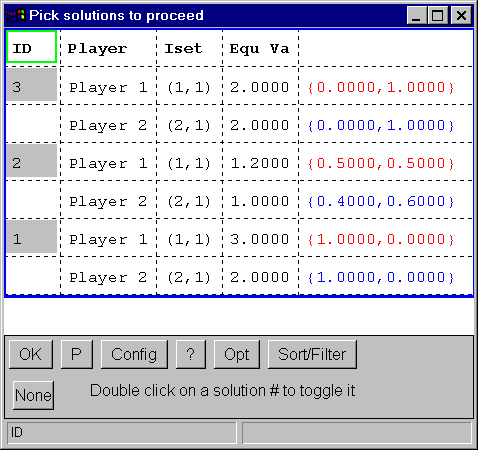

Contents Up << >>
EFG Solutions and Subgames
If the extensive form contains more than one subgame, and if the
subgames are either marked explicitly or implicitly by selecting the
Mark Subgames, Gambit will apply the selected algorithm to each
subgame in reverse tree traversal order. For each solution obtained
at a subgame node, a full solution will exist. If there are a lot of
subgames, and each subgame produces multiple solutions, the total
number of solutions grows exponentially.
To provide the user with interactive control over which subgame
solutions will be used to compute the full solutions, the subgame
solution picking dialog can be used. This option is enabled from the
main Custom solutions dialog by checking the intractively select
subgame solutions checkbox. When enabled, for each subgame solved by
Gambit, a solution display window will be created and the user must
select the subgame solutions to be used for further calculations.
Solutions are selected/deselected by double-clicking or
Ctrl-clicking on the corresponding solution number. At least one
solution must be selected for each subgame.

Figure 6.6: Subgame solution picking dialog w/ all solns selected
To speed up solution selection two shortcuts exist:
- Select/unselect all of the solutions at once.
- The dialog
starts up with all of the solutions in the same state (selected or
unselected) depending on the current default (see next item). If all
of the solutions are selected, a None button will exist.
Pressing the button will unselect all of the solutions. The button
will then change to All. Pressing the All button will
select all of the solutions.
- Default selection parameter.
- The startup state of the solution
picking dialog can be controlled through the Opt button. The
Pick All Solutions item is saved to a defaults file and is used
for all future dialogs.